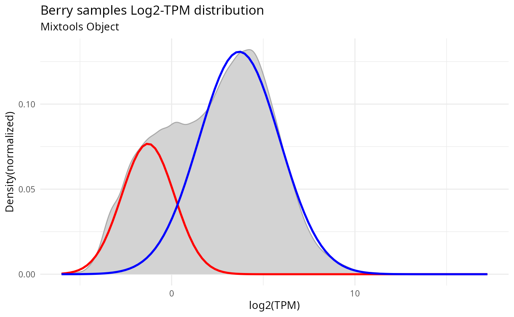
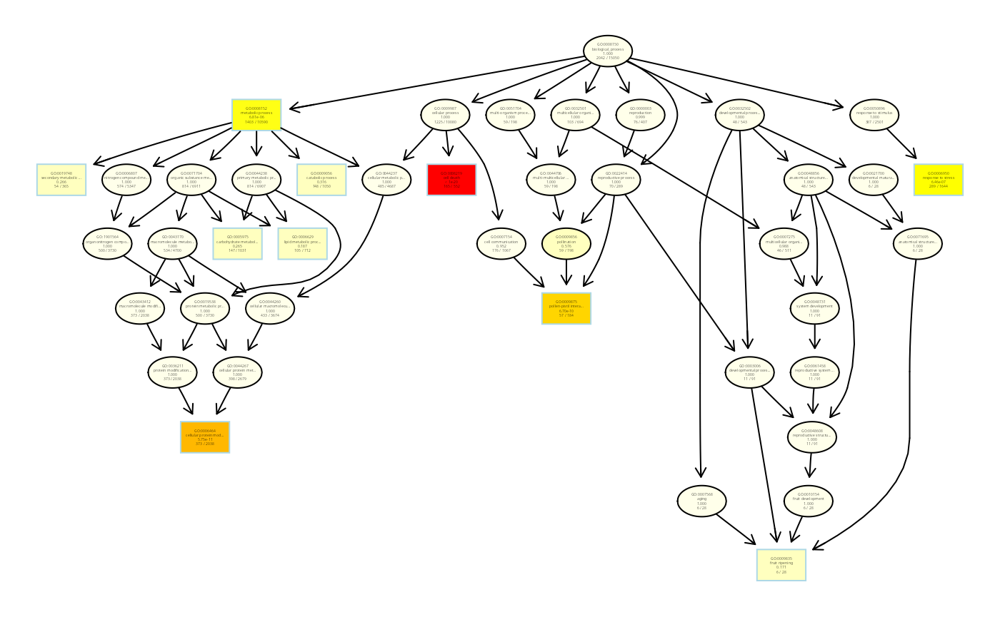

Abstract
Beyond basics
VESPUCCI is the gene expression database for grapevine and we can access it via its GraphQL interface, called COMPASS. The rCOMPASS package is a R package that wraps some functionalities to simplify communication with the COMPASS interface.
In this second exercise we will use VESPUCCI together with some dedicate R packages to create an integrated workflow that goes beyond the functionality that VESPUCCI alone provides.
The goal here is to answer the following question: which are the “biological processes” that get shut down in fruit? To answer this question we will need to perform a GO enrichment analysis (using, e.g., topGO package) on a subset of genes that are not expressed in fruit tissue.
For this case study we decide to use the TPM normalized values (databases.normalizations1=“tpm”) from VESPUCCI version 2.0 (versionNumber “2.0”). See get_available_compendia() function to check the different normalization available.
Let’s start loading rcompass.
# devtools::install_github("onertipaday/rcompass")
library(rcompass)
#>
#> This is 'rCOMPASS' version 0.0.4 based on COMPASS version 0.8.8.Select the samples of interest
Select berry samples
Using a SPARQL query we can select only the samples annotated as berry using the following triple template where PO_0030108 is the Plant Ontology term for berry fruit.
sparql = "SELECT ?s ?p ?o WHERE { ?s <http://www.w3.org/1999/02/22-rdf-syntax-ns#type> <http://purl.obolibrary.org/obo/PO_0030108>}"
berry_samples <- get_sparql_annotation_triples(target = "sample",
normalization = "tpm",
query = sparql)[,1]Get the SampleSets
Now that we have the samples we need to retrieve the SampleSets objects for this specific normalization (‘tpm’ normalization).
berry_ss <- get_sampleset_id(name_In = berry_samples,
normalization = "tpm",
useIds = TRUE)Create the module
Now that we have both the genes (BiologicalFeatures) and the SampleSets, we can create our Module and retrieve the TPM-normalized values.
module <- create_module(compendium = "vespucci",
normalization = "tpm",
biofeaturesNames = genes$id,
samplesetNames = berry_ss$id,
useIds = TRUE)
colnames(module) <- berry_ss$name; row.names(module) <- genes$nameFormat the values
In order to better handle the module values and get rid of NaNs, we will create a data.frame starting from our Module values (we are using log2), with genes as rows and SampleSets as columns.
df_base <- module[rowSums(is.na(module)) != ncol(module), ] # remove rows with only NAs from the matrix
df = log2(df_base + 0.01)
i <- which(is.na(df), arr.ind = TRUE)
df[i] <- rowMeans(df, na.rm = TRUE)[i[,1]]
module_df <- na.omit(df)
hist(module_df, breaks = 100)
Gaussian Mixture Model Analysis
Fit a 2-component Gaussian Mixture Model
The idea to fit a 2-component Gaussian Mixture Model comes from the following paper: Hebenstreit, D., Fang, M., Gu, M., Charoensawan, V., van Oudenaarden, A., & Teichmann, S. A. (2011). RNA sequencing reveals two major classes of gene expression levels in metazoan cells. Molecular systems biology, 7(1).
Normal Mixture Models using mixtools package
suppressPackageStartupMessages(library(mixtools))
set.seed(42)
gmm_fit <- mixtools::normalmixEM(as.vector(module_df), k = 2)
#> number of iterations= 215Plot the data distribution and the fitted model
suppressPackageStartupMessages(library(plotly))
suppressPackageStartupMessages(library(plotmm))
plot_mm(gmm_fit, 2) +
ggplot2::labs(title = "Berry samples Log2-TPM distribution",
subtitle = "Mixtools Object",
x = "log2(TPM)",
y = "Density(normalized)") + theme_minimal()
p <- plot_cut_point(gmm_fit, plot = TRUE, color = "amerika") +
ggplot2::labs(title = "Berry samples Log2-TPM distribution",
subtitle = "Mixtools Object",
x = "log2(TPM)",
y = "Density") + theme_minimal()
#> Registered S3 method overwritten by 'wesanderson':
#> method from
#> print.palette amerika
ggplotly(p)
#> `stat_bin()` using `bins = 30`. Pick better value with `binwidth`.Choose a cutoff for non-expressed genes
From the plot we can (arbitrarily) choose a log2-TPM cutoff value to distinguish the portion of expressed genes from the non-expressed genes. We chose to set this cutoff at 0.5, that is roughly the median value of the lowly expressed component.
plot_cut_point(gmm_fit, plot = FALSE)
#> [1] 1.206382
# genes with log2(tpm) < 0.5 in all samples
never_expressed_in_fruit <- apply(module_df, 1, function(x) all(x < 0.5))
never_expressed_in_fruit_names <- names(never_expressed_in_fruit)[never_expressed_in_fruit]
table(apply(module_df, 1, function(x) all(x < 0.5)))
#>
#> FALSE TRUE
#> 21456 4692
# percentage of genes not expressed in fruit
cat(length(names(never_expressed_in_fruit)[never_expressed_in_fruit])/(dim(module_df)[[1]]) * 100, "%")
#> 17.94401 %GO Analysis
Retrieve the GO annotation
Now it’s time to retrieve all the GO terms for our genes and see if in the subset of genes never expressed in fruit there are GO terms that are over-represented compared to the full annotation.
We might want to use the Annotation class to retrieve the annotation for all our genes filtering out the GO terms, but to avoid the overhead given by the large number of genes to use, it is better to perform a lower level operation and go directly with a SPARQL query for the annotation terms we are interested in.
get_annotation_triples(ids = genes$id[1:5])
#> [,1] [,2] [,3]
#> [1,] "VIT_10s0116g00040" "Gene Alias" "Vv10s0116g00040"
#> [2,] "GO_0006810" "name" "transport"
#> [3,] "VIT_10s0116g00060" "Annotation" "GO_0006810"
#> [4,] "GO_0019684" "name" "photosynthesis, light reaction"
#> [5,] "VIT_10s0116g00060" "Annotation" "GO_0019684"
#> [6,] "GO_0055114" "name" "oxidation-reduction process"
#> [7,] "VIT_10s0116g00060" "Annotation" "GO_0055114"
#> [8,] "VIT_10s0116g00060" "Gene Alias" "1.6.5.3"
#> [9,] "VIT_10s0116g00060" "Gene Alias" "EC:1.6.5.3"
#> [10,] "VIT_10s0116g00060" "Gene Alias" "VIT_10s0116g00060"
#> [11,] "VIT_10s0116g00060" "Gene Alias" "Vv10s0116g00060"
#> [12,] "VIT_10s0116g00070" "Gene Alias" "E0CVJ7"
#> [13,] "VIT_10s0116g00070" "Gene Alias" "Vv10s0116g00070"
#> [14,] "VIT_10s0116g00080" "Gene Alias" "B9HI95"
#> [15,] "VIT_10s0116g00080" "Gene Alias" "POPTR_0008s08900g"
#> [16,] "VIT_10s0116g00080" "Gene Alias" "Vv10s0116g00080"
#> [17,] "GO_0048544" "name" "recognition of pollen"
#> [18,] "VIT_10s0116g00150" "Annotation" "GO_0048544"
#> [19,] "GO_0006468" "name" "protein phosphorylation"
#> [20,] "VIT_10s0116g00150" "Annotation" "GO_0006468"
#> [21,] "VIT_10s0116g00150" "Gene Alias" "B9RXT0"
#> [22,] "VIT_10s0116g00150" "Gene Alias" "Vv10s0116g00150"So let’s avoid the previous code that we ran for only 5 genes and go with the following instead, that is a SPARQL query that will return all the triples where a biofeature is annotated (Annotation is the term NCIT_C44272) with a term starting with ‘GO_’
sparql = "SELECT ?s ?o WHERE {?s <http://purl.obolibrary.org/obo/NCIT_C44272> ?o FILTER (strstarts(str(?o), 'GO_'))}"
triples <- get_sparql_annotation_triples(compendium = "vespucci",
target = "biofeature",
normalization = "tpm",
query = sparql)
colnames(triples) <- c("id","GOTERM")
triples$GOTERM <- stringr::str_replace(triples$GOTERM,"_",":") # get rid of the underscore '_' in the annotation terms and replace it with the ':' symbol.
go_assoc <- dplyr::full_join(triples, genes)
#> Joining, by = "id"GO analysis using topGO
To start the GO analysis we will download the basic GO and the Plant Slim GO and create both DAGs objects.
suppressPackageStartupMessages(library("topGO"))
#>
#> groupGOTerms: GOBPTerm, GOMFTerm, GOCCTerm environments built.
GO_plant_slim <- read.table(system.file("extdata", "GO_plant_slim.tsv", package = "rcompass"), sep="\t", header=FALSE, stringsAsFactors=FALSE)
colnames(GO_plant_slim)<-c("ID","GOTERM","GOdescription","Category")
library("plyr")
#>
#> Attaching package: 'plyr'
#> The following object is masked from 'package:IRanges':
#>
#> desc
#> The following object is masked from 'package:S4Vectors':
#>
#> rename
#> The following object is masked from 'package:graph':
#>
#> join
#> The following objects are masked from 'package:plotly':
#>
#> arrange, mutate, rename, summarise
tmp <- dlply(GO_plant_slim,.(GOTERM))
my_GO_ann_lib <- lapply(tmp, function(x){ subset(x, select=1, drop=TRUE) }) # drop=T ==> genes in a vector of characters
geneID2GO <- inverseList(my_GO_ann_lib) # we need this object for the annotation since there is no vitis.db
geneNames <- names(geneID2GO) # As Universe I select all the genes in the genomeWe perform a classical enrichment analysis by testing the over-representation of GO terms within the group of expressed genes. For the method classic each GO category is tested independently. We will look for enriched GOTERMS of the Biological Process (BP) Gene Ontology.
myInterestingGenes <- never_expressed_in_fruit_names
geneList <- factor(as.integer(geneNames %in% myInterestingGenes))
names(geneList) <- geneNames
#table(geneList)
GOdata.BP <- new("topGOdata", ontology = "BP", allGenes = geneList, annot = annFUN.gene2GO, gene2GO = geneID2GO)
#>
#> Building most specific GOs .....
#> ( 45 GO terms found. )
#>
#> Build GO DAG topology ..........
#> ( 102 GO terms and 165 relations. )
#>
#> Annotating nodes ...............
#> ( 15050 genes annotated to the GO terms. )
test.stat <- new("classicCount", testStatistic = GOFisherTest, name = "Fisher test")
( resultFisher.BP <- getSigGroups(GOdata.BP, test.stat) )
#>
#> -- Classic Algorithm --
#>
#> the algorithm is scoring 98 nontrivial nodes
#> parameters:
#> test statistic: Fisher test
#>
#> Description:
#> Ontology: BP
#> 'classic' algorithm with the 'Fisher test' test
#> 102 GO terms scored: 13 terms with p < 0.01
#> Annotation data:
#> Annotated genes: 15050
#> Significant genes: 2042
#> Min. no. of genes annotated to a GO: 1
#> Nontrivial nodes: 98
topNodes = 20
resultFis.BP <- runTest(GOdata.BP, statistic = "fisher") # weight01 is the default algorithm
#>
#> -- Weight01 Algorithm --
#>
#> the algorithm is scoring 98 nontrivial nodes
#> parameters:
#> test statistic: fisher
#>
#> Level 9: 2 nodes to be scored (0 eliminated genes)
#>
#> Level 8: 3 nodes to be scored (0 eliminated genes)
#>
#> Level 7: 5 nodes to be scored (91 eliminated genes)
#>
#> Level 6: 9 nodes to be scored (749 eliminated genes)
#>
#> Level 5: 16 nodes to be scored (3767 eliminated genes)
#>
#> Level 4: 24 nodes to be scored (3767 eliminated genes)
#>
#> Level 3: 27 nodes to be scored (6369 eliminated genes)
#>
#> Level 2: 11 nodes to be scored (10517 eliminated genes)
#>
#> Level 1: 1 nodes to be scored (12533 eliminated genes)
allRes.BP <- data.frame( GenTable(GOdata.BP, classic = resultFis.BP, orderBy = "weight",
ranksOf = "classic", topNodes = topNodes), Ontology=rep("BP", topNodes) )
showSigOfNodes(GOdata.BP, score(resultFis.BP), firstSigNodes = 10, useInfo = "all")
#> Loading required package: Rgraphviz
#> Loading required package: grid
#>
#> Attaching package: 'grid'
#> The following object is masked from 'package:topGO':
#>
#> depth
#> The following object is masked from 'package:mixtools':
#>
#> depth
#>
#> Attaching package: 'Rgraphviz'
#> The following objects are masked from 'package:IRanges':
#>
#> from, to
#> The following objects are masked from 'package:S4Vectors':
#>
#> from, to
#> The following object is masked from 'package:plotly':
#>
#> style
#> $dag
#> A graphNEL graph with directed edges
#> Number of Nodes = 42
#> Number of Edges = 65
#>
#> $complete.dag
#> [1] "A graph with 42 nodes."GOFuncR
Custom annotations
Besides using bioconductor’s annotation packages for the mapping of genes to GO-categories, it is also possible to provide the annotations directly as a dataframe with two columns: (1) genes and (2) GO-IDs (parameter annotations).
suppressPackageStartupMessages(library(GOfuncR))
gene_ids <- never_expressed_in_fruit_names
custom_anno <- go_assoc %>% transmute(gene = name, go_id=GOTERM)
input_hyper = data.frame(gene_ids, is_candidate=1)
input_hyper
## run enrichment analysis with custom annotations
res_hyper_anno = go_enrich(input_hyper, annotations=custom_anno)
#> Checking arguments...
#> Write temporary files...
#> Find associated categories using custom annotations...
#> Remove annotated categories not present in GO-graph...
#> Found root_nodes: biological_process
#> Remove invalid genes...
#> Warning in go_enrich(input_hyper, annotations = custom_anno): No GO-
#> annotation for genes: VIT_10s0116g00040, VIT_10s0116g00470, VIT_10s0116g01090,
#> VIT_10s0116g01520, VIT_10s0116g01530, VIT_10s0116g01590, VIT_10s0116g01570,
#> VIT_10s0003g00160, VIT_10s0003g00400, VIT_10s0003g00480, VIT_10s0003g00700,
#> VIT_10s0003g00840, VIT_10s0003g00850, VIT_10s0003g00970, VIT_10s0003g01030,
#> VIT_10s0003g01250, VIT_10s0003g01510, VIT_10s0003g01740, VIT_10s0003g01930,
#> VIT_10s0003g02010, VIT_10s0003g02630, VIT_10s0003g03210, VIT_10s0003g03220,
#> VIT_10s0003g03350, VIT_10s0003g03530, VIT_10s0003g03560, VIT_10s0003g03610,
#> VIT_10s0003g03650, VIT_10s0003g03840, VIT_10s0003g03990, VIT_10s0003g04290,
#> VIT_10s0003g04520, VIT_10s0003g04760, VIT_10s0003g05050, VIT_10s0003g05270,
#> VIT_10s0003g05800, VIT_10s0003g03450, VIT_10s0003g00450, VIT_10s0003g01970,
#> VIT_10s0003g02370, VIT_10s0003g02920, VIT_10s0003g03540, VIT_10s0003g03570,
#> VIT_10s0003g03760, VIT_10s0003g04140, VIT_10s0003g04150, VIT_10s0003g04440,
#> VIT_10s0003g04750, VIT_10s0003g04780, VIT_10s0003g04920, VIT_10s0003g04930,
#> VIT_10s0003g05410, VIT_10s0003g05440, VIT_10s0003g05500, VIT_10s0003g05750,
#> VIT_10s0003g05760, VIT_10s0405g00070, VIT_10s0042g00130, VIT_10s0042g00320,
#> VIT_10s0042g00540, VIT_10s0042g00670, VIT_10s0042g00900, VIT_10s0042g01160,
#> VIT_10s0042g00290, VIT_10s0042g00720, VIT_10s0042g00980, VIT_10s0042g01410,
#> VIT_10s0071g00570, VIT_10s0071g00520, VIT_10s0071g00460, VIT_10s0071g00650,
#> VIT_10s0071g00620, VIT_10s0071g00380, VIT_10s0071g00170, VIT_10s0071g00120,
#> VIT_10s0092g00130, VIT_10s0092g00300, VIT_10s0092g00310, VIT_10s0092g00380,
#> VIT_10s0092g00390, VIT_10s0092g00580, VIT_10s0092g00740, VIT_10s0092g00410,
#> VIT_10s0116g01190, VIT_10s0116g01320, VIT_10s0116g00610, VIT_11s0103g00340,
#> VIT_11s0103g00260, VIT_11s0103g00200, VIT_11s0103g00460, VIT_11s0103g00440,
#> VIT_11s0118g00190, VIT_11s0118g00600, VIT_11s0118g00640, VIT_11s0118g00110,
#> VIT_11s0118g00690, VIT_11s0149g00310, VIT_11s0016g01140, VIT_11s0016g01560,
#> VIT_11s0016g02730, VIT_11s0016g02740, VIT_11s0016g03340, VIT_11s0016g03740,
#> VIT_11s0016g04280, VIT_11s0016g04400, VIT_11s0016g04640, VIT_11s0016g04660,
#> VIT_11s0016g05670, VIT_11s0016g05790, VIT_11s0016g01580, VIT_11s0016g02930,
#> VIT_11s0016g04110, VIT_11s0016g05150, VIT_11s0016g05550, VIT_11s0206g00010,
#> VIT_11s0037g00060, VIT_11s0037g00310, VIT_11s0037g00540, VIT_11s0037g00790,
#> VIT_11s0037g01190, VIT_11s0037g01200, VIT_11s0037g01350, VIT_11s0037g01140,
#> VIT_11s0037g01260, VIT_11s0052g01140, VIT_11s0052g00390, VIT_11s0052g01790,
#> VIT_11s0052g00910, VIT_11s0052g00900, VIT_11s0052g00690, VIT_11s0052g00370,
#> VIT_11s0052g00360, VIT_11s0052g00050, VIT_11s0065g00240, VIT_11s0065g00530,
#> VIT_11s0065g00590, VIT_11s0065g00610, VIT_11s0065g00680, VIT_11s0065g00760,
#> VIT_11s0065g00770, VIT_11s0065g00840, VIT_11s0065g01110, VIT_11s0065g00080,
#> VIT_11s0065g00430, VIT_11s0065g00670, VIT_11s0065g01200, VIT_11s0078g00060,
#> VIT_11s0078g00300, VIT_11s0078g00450, VIT_11s0078g00280, VIT_11s0078g00050,
#> VIT_12s0121g00410, VIT_12s0121g00430, VIT_12s0121g00250, VIT_12s0121g00420,
#> VIT_12s0134g00250, VIT_12s0134g00440, VIT_12s0134g00180, VIT_12s0142g00080,
#> VIT_12s0142g00140, VIT_12s0178g00110, VIT_12s0178g00180, VIT_12s0028g04030,
#> VIT_12s0028g04020, VIT_12s0028g03990, VIT_12s0028g03970, VIT_12s0028g03960,
#> VIT_12s0028g03710, VIT_12s0028g02850, VIT_12s0028g02830, VIT_12s0028g02810,
#> VIT_12s0028g02730, VIT_12s0028g02090, VIT_12s0028g01900, VIT_12s0028g01730,
#> VIT_12s0028g01690, VIT_12s0028g01660, VIT_12s0028g01590, VIT_12s0028g01580,
#> VIT_12s0028g01440, VIT_12s0028g00500, VIT_12s0028g00480, VIT_12s0028g00070,
#> VIT_12s0028g02330, VIT_12s0028g02310, VIT_12s0028g01610, VIT_12s0028g01500,
#> VIT_12s0028g00900, VIT_12s0028g00680, VIT_12s0034g02520, VIT_12s0034g02430,
#> VIT_12s0034g02410, VIT_12s0034g02250, VIT_12s0034g02210, VIT_12s0034g02090,
#> VIT_12s0034g02000, VIT_12s0034g01980, VIT_12s0034g01740, VIT_12s0034g01700,
#> VIT_12s0034g01570, VIT_12s0034g01400, VIT_12s0034g01390, VIT_12s0034g00990,
#> VIT_12s0034g00940, VIT_12s0034g00830, VIT_12s0034g00650, VIT_12s0034g00520,
#> VIT_12s0034g00390, VIT_12s0034g00340, VIT_12s0034g00330, VIT_12s0034g00010,
#> VIT_12s0034g02420, VIT_12s0034g01550, VIT_12s0034g01540, VIT_12s0034g01280,
#> VIT_12s0034g00530, VIT_12s0034g00280, VIT_12s0034g02290, VIT_12s0034g02120,
#> VIT_12s0034g00630, VIT_12s0034g00450, VIT_12s0034g00170, VIT_12s0034g00070,
#> VIT_12s0035g01970, VIT_12s0035g01640, VIT_12s0035g01620, VIT_12s0035g01000,
#> VIT_12s0035g00940, VIT_12s0035g00630, VIT_12s0035g00590, VIT_12s0035g00550,
#> VIT_12s0035g00520, VIT_12s0035g00250, VIT_12s0035g00160, VIT_12s0035g00040,
#> VIT_12s0035g01550, VIT_12s0035g01460, VIT_12s0035g00220, VIT_12s0035g01610,
#> VIT_12s0035g00980, VIT_12s0035g00650, VIT_12s0035g00450, VIT_12s0035g00290,
#> VIT_12s0055g00400, VIT_12s0055g00730, VIT_12s0055g00990, VIT_12s0055g00520,
#> VIT_12s0055g00530, VIT_12s0055g00100, VIT_12s0055g00680, VIT_12s0055g01120,
#> VIT_12s0055g01260, VIT_12s0057g00410, VIT_12s0057g00540, VIT_12s0057g00620,
#> VIT_12s0057g00640, VIT_12s0057g00730, VIT_12s0057g00760, VIT_12s0057g00780,
#> VIT_12s0057g00860, VIT_12s0057g00870, VIT_12s0057g00930, VIT_12s0057g01150,
#> VIT_12s0057g01610, VIT_12s0057g00450, VIT_12s0057g00340, VIT_12s0057g00350,
#> VIT_12s0057g00820, VIT_12s0057g01600, VIT_12s0059g00120, VIT_12s0059g00210,
#> VIT_12s0059g00240, VIT_12s0059g00790, VIT_12s0059g00920, VIT_12s0059g01410,
#> VIT_12s0059g01610, VIT_12s0059g02200, VIT_12s0059g01710, VIT_12s0059g01780,
#> VIT_12s0059g01840, VIT_12s0059g01950, VIT_12s0059g02040, VIT_12s0059g02080,
#> VIT_12s0059g02100, VIT_12s0059g02500, VIT_12s0059g02630, VIT_12s0059g00850,
#> VIT_12s0059g01360, VIT_12s0059g02690, VIT_12s0059g00680, VIT_12s0142g00530,
#> VIT_12s0142g00540, VIT_12s0028g00280, VIT_12s0142g00020, VIT_12s0142g00680,
#> VIT_12s0028g00870, VIT_13s0101g00020, VIT_13s0101g00310, VIT_13s0101g00440,
#> VIT_13s0106g00190, VIT_13s0106g00200, VIT_13s0106g00210, VIT_13s0106g00390,
#> VIT_13s0106g00430, VIT_13s0106g00540, VIT_13s0106g00580, VIT_13s0106g00170,
#> VIT_13s0106g00680, VIT_13s0139g00240, VIT_13s0139g00280, VIT_13s0139g00410,
#> VIT_13s0139g00330, VIT_13s0139g00470, VIT_13s0147g00080, VIT_13s0147g00140,
#> VIT_13s0156g00160, VIT_13s0156g00380, VIT_13s0019g05060, VIT_13s0019g04900,
#> VIT_13s0019g04510, VIT_13s0019g04290, VIT_13s0019g03780, VIT_13s0019g03760,
#> VIT_13s0019g03530, VIT_13s0019g03310, VIT_13s0019g03110, VIT_13s0019g02500,
#> VIT_13s0019g02270, VIT_13s0019g02120, VIT_13s0019g01340, VIT_13s0019g01310,
#> VIT_13s0019g01020, VIT_13s0019g00990, VIT_13s0019g00580, VIT_13s0019g00500,
#> VIT_13s0019g00410, VIT_13s0019g00400, VIT_13s0019g00180, VIT_13s0019g00160,
#> VIT_13s0019g05320, VIT_13s0019g05310, VIT_13s0019g05300, VIT_13s0019g02870,
#> VIT_13s0019g04020, VIT_13s0320g00020, VIT_13s0047g01220, VIT_13s0047g00920,
#> VIT_13s0047g00840, VIT_13s0047g00830, VIT_13s0047g00090, VIT_13s0047g00420,
#> VIT_13s0047g01000, VIT_13s0047g00960, VIT_13s0047g00890, VIT_13s0047g00810,
#> VIT_13s0047g00430, VIT_13s0047g00140, VIT_13s0064g01780, VIT_13s0064g01400,
#> VIT_13s0064g01060, VIT_13s0064g01000, VIT_13s0064g00330, VIT_13s0064g00250,
#> VIT_13s0064g00070, VIT_13s0064g01420, VIT_13s0064g00090, VIT_13s0064g01880,
#> VIT_13s0064g00350, VIT_13s0064g00110, VIT_13s0067g03860, VIT_13s0067g03180,
#> VIT_13s0067g03010, VIT_13s0067g01610, VIT_13s0067g02590, VIT_13s0073g00570,
#> VIT_13s0073g00220, VIT_13s0073g00320, VIT_13s0073g00700, VIT_13s0073g00380,
#> VIT_13s0073g00290, VIT_13s0073g00260, VIT_13s0073g00200, VIT_13s0073g00080,
#> VIT_13s0074g00170, VIT_13s0074g00220, VIT_13s0074g00460, VIT_13s0074g00350,
#> VIT_13s0074g00670, VIT_13s0084g00220, VIT_13s0084g00380, VIT_13s0084g00230,
#> VIT_13s0084g00760, VIT_13s0084g00730, VIT_13s0067g00070, VIT_13s0067g00340,
#> VIT_13s0067g01700, VIT_13s0067g01390, VIT_13s0067g02010, VIT_13s0067g03540,
#> VIT_13s0019g00100, VIT_13s0067g03610, VIT_13s0019g00560, VIT_13s0019g00570,
#> VIT_13s0019g00790, VIT_13s0019g00820, VIT_13s0019g01250, VIT_13s0019g01420,
#> VIT_14s0108g00030, VIT_14s0108g00200, VIT_14s0108g00530, VIT_14s0108g00650,
#> VIT_14s0108g00900, VIT_14s0108g01250, VIT_14s0108g01530, VIT_14s0128g00040,
#> VIT_14s0128g00420, VIT_14s0128g00700, VIT_14s0128g00800, VIT_14s0128g00590,
#> VIT_14s0171g00070, VIT_14s0171g00350, VIT_14s0171g00500, VIT_14s0219g00180,
#> VIT_14s0219g00240, VIT_14s0219g00300, VIT_14s0030g02280, VIT_14s0030g02210,
#> VIT_14s0030g02040, VIT_14s0030g00800, VIT_14s0030
#>
#>
#> Processing root node: biological_process...
#> Run Func...
#>
#> Done.Take a look at the data
## first element of go_enrich result has the stats
stats = res_hyper_anno[[1]]
## top-GO categories
head(stats)
#> ontology node_id node_name raw_p_underrep
#> 1 biological_process GO:0006468 protein phosphorylation 1
#> 2 biological_process GO:0006915 apoptotic process 1
#> 3 biological_process GO:0008219 cell death 1
#> 4 biological_process GO:0012501 programmed cell death 1
#> 5 biological_process GO:0016310 phosphorylation 1
#> 6 biological_process GO:0006952 defense response 1
#> raw_p_overrep FWER_underrep FWER_overrep
#> 1 3.185314e-23 1 0
#> 2 4.258506e-22 1 0
#> 3 8.626769e-22 1 0
#> 4 3.438782e-21 1 0
#> 5 1.302778e-19 1 0
#> 6 1.226173e-14 1 0
## top GO-categories per domain
by(stats, stats$ontology, head, n=3)
#> stats$ontology: biological_process
#> ontology node_id node_name raw_p_underrep
#> 1 biological_process GO:0006468 protein phosphorylation 1
#> 2 biological_process GO:0006915 apoptotic process 1
#> 3 biological_process GO:0008219 cell death 1
#> raw_p_overrep FWER_underrep FWER_overrep
#> 1 3.185314e-23 1 0
#> 2 4.258506e-22 1 0
#> 3 8.626769e-22 1 0
#all valid input genes
# res_hyper_anno[[2]]
#The fourth element is a dataframe with the minimum p-values from the permutations, which are used to compute the FWER:
## minimum p-values from randomsets
head(res_hyper_anno[[4]])
#> ontology lower_tail upper_tail
#> 1 biological_process 4.806552e-08 3.266235e-07
#> 2 biological_process 1.246834e-05 1.360433e-05
#> 3 biological_process 3.147404e-05 2.229046e-05
#> 4 biological_process 3.352672e-05 2.272127e-05
#> 5 biological_process 3.443877e-05 2.572346e-05
#> 6 biological_process 3.487649e-05 2.803566e-05
## hypergeometric test
# top_gos_hyper = res_hyper_anno[[1]][1:5, 'node_id']
# GO-categories with a high proportion of candidate genes
# top_gos_hyper
# plot_anno_scores(res_hyper_anno, top_gos_hyper,annotations = go_assoc)Session information
#> R version 4.0.4 (2021-02-15)
#> Platform: x86_64-redhat-linux-gnu (64-bit)
#> Running under: Fedora 33 (Workstation Edition)
#>
#> Matrix products: default
#> BLAS/LAPACK: /usr/lib64/libflexiblas.so.3.0
#>
#> attached base packages:
#> [1] grid stats4 parallel stats graphics grDevices utils
#> [8] datasets methods base
#>
#> other attached packages:
#> [1] GOfuncR_1.10.0 vioplot_0.3.6 zoo_1.8-9
#> [4] sm_2.2-5.6 Rgraphviz_2.34.0 plyr_1.8.6
#> [7] topGO_2.42.0 SparseM_1.81 GO.db_3.12.1
#> [10] AnnotationDbi_1.52.0 IRanges_2.24.1 S4Vectors_0.28.1
#> [13] Biobase_2.50.0 graph_1.68.0 BiocGenerics_0.36.0
#> [16] plotmm_0.1.0 plotly_4.9.3 ggplot2_3.3.3
#> [19] mixtools_1.2.0 rcompass_0.0.4
#>
#> loaded via a namespace (and not attached):
#> [1] ghql_0.1.0 colorspace_2.0-0 ellipsis_0.3.1
#> [4] modeltools_0.2-23 rprojroot_2.0.2 XVector_0.30.0
#> [7] GenomicRanges_1.42.0 fs_1.5.0 amerika_0.1.0
#> [10] httpcode_0.3.0 farver_2.1.0 urltools_1.7.3
#> [13] flexmix_2.3-17 bit64_4.0.5 fansi_0.4.2
#> [16] splines_4.0.4 cachem_1.0.4 knitr_1.31
#> [19] wesanderson_0.3.6 jsonlite_1.7.2 kernlab_0.9-29
#> [22] compiler_4.0.4 httr_1.4.2 assertthat_0.2.1
#> [25] Matrix_1.3-2 fastmap_1.1.0 lazyeval_0.2.2
#> [28] htmltools_0.5.1.1 tools_4.0.4 gtable_0.3.0
#> [31] glue_1.4.2 GenomeInfoDbData_1.2.4 dplyr_1.0.5
#> [34] Rcpp_1.0.6 jquerylib_0.1.3 pkgdown_1.6.1
#> [37] vctrs_0.3.7 RJSONIO_1.3-1.4 crul_1.1.0
#> [40] crosstalk_1.1.1 xfun_0.22 stringr_1.4.0
#> [43] lifecycle_1.0.0 gtools_3.8.2 zlibbioc_1.36.0
#> [46] MASS_7.3-53 scales_1.1.1 ragg_1.1.2
#> [49] mapplots_1.5.1 yaml_2.2.1 curl_4.3
#> [52] memoise_2.0.0 sass_0.3.1 triebeard_0.3.0
#> [55] segmented_1.3-3 stringi_1.5.3 RSQLite_2.2.6
#> [58] highr_0.8 desc_1.3.0 GenomeInfoDb_1.26.7
#> [61] rlang_0.4.10 pkgconfig_2.0.3 systemfonts_1.0.1
#> [64] matrixStats_0.58.0 bitops_1.0-6 evaluate_0.14
#> [67] lattice_0.20-41 purrr_0.3.4 patchwork_1.1.1
#> [70] htmlwidgets_1.5.3 labeling_0.4.2 bit_4.0.4
#> [73] tidyselect_1.1.0 magrittr_2.0.1 R6_2.5.0
#> [76] generics_0.1.0 DBI_1.1.1 EMCluster_0.2-13
#> [79] pillar_1.6.0 withr_2.4.1 survival_3.2-7
#> [82] RCurl_1.98-1.3 nnet_7.3-15 tibble_3.1.0
#> [85] crayon_1.4.1 utf8_1.2.1 rmarkdown_2.7
#> [88] data.table_1.14.0 blob_1.2.1 graphql_1.5
#> [91] digest_0.6.27 tidyr_1.1.3 textshaping_0.3.3
#> [94] munsell_0.5.0 viridisLite_0.4.0 bslib_0.2.4
#> [97] tcltk_4.0.4